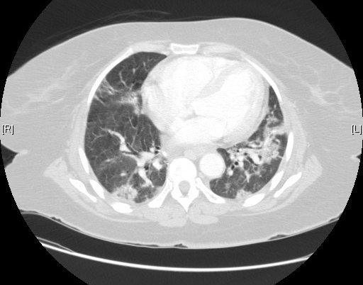

Ficha del catálogo
Fibrosis pulmonar y patrón de neumonía intersticial usual
- Sistema
- Respiratorio
- Modalidad
- TC
- Región
- Tórax
- Dificultad
- Avanzado
La fibrosis pulmonar consiste en la sustitución progresiva del parénquima normal por tejido cicatricial, con pérdida de volumen y deterioro del intercambio gaseoso. El patrón de neumonía intersticial usual es el más característico de la fibrosis pulmonar idiopática y su reconocimiento en tomografía puede evitar la biopsia. La disnea progresiva y los crepitantes en velcro son los datos clínicos guía.
Técnica
Tomografía de alta resolución sin contraste en inspiración máxima, con series en espiración y en decúbito prono para diferenciar cambios reales de artefactos gravitacionales.
Qué observar
- Panal de abeja subpleural con quistes agrupados en hileras
- Reticulación subpleural con predominio en bases y periferia
- Bronquiectasias y bronquiolectasias de tracción
- Pérdida de volumen de lóbulos inferiores con desplazamiento de cisuras
- Ausencia de hallazgos que sugieran diagnóstico alternativo, como vidrio deslustrado extenso
- Gradiente apicobasal característico con vértices relativamente respetados
Hallazgos
Reticulación subpleural basal con panalización y bronquiectasias de tracción, con distribución periférica y gradiente hacia las bases.
Perlas
El panal de abeja subpleural en hileras con predominio basal y periférico define el patrón típico. Si en cambio predomina el vidrio deslustrado o hay atrapamiento aéreo lobulillar, hay que pensar en neumonitis por hipersensibilidad.
Diagnóstico diferencial
- Neumonitis por hipersensibilidad crónica
- Predominio en campos medios con atrapamiento aéreo y nódulos centrolobulillares.
- Neumonía intersticial no específica
- Vidrio deslustrado extenso con respeto subpleural inmediato.
- Asbestosis
- Fibrosis basal con placas pleurales y antecedente de exposición.
Simuladores
- Cambios gravitacionales en decúbito supino
- Enfisema paraseptal confundido con panal
- Atelectasias basales dependientes
Por modalidad
- RX
- Reticulación basal y pérdida de volumen en fases avanzadas
- TC
- Define el patrón y permite el diagnóstico sin biopsia en casos típicos
Protocolo
Alta resolución en inspiración, espiración y decúbito prono, sin contraste, con reconstrucciones en los tres planos.
Clasificación
Los patrones se categorizan como típico de neumonía intersticial usual, probable, indeterminado o sugestivo de diagnóstico alternativo, lo que orienta la necesidad de biopsia.
Errores frecuentes
- Confundir enfisema paraseptal con panalización
- No hacer serie en prono y sobrediagnosticar fibrosis basal
- Ignorar signos de diagnóstico alternativo que cambian por completo el manejo

fibrosis pulmonar panal de abeja reticulacion bronquiectasias de traccion intersticial alta resolucion